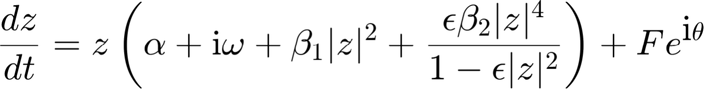
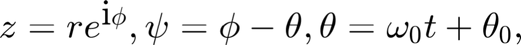
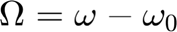

rStarDriven11
[rStar, psiStar, stability, stabType] = rStarDriven11(alpha, beta1, beta2, epsilon, forcing amplitude, Omega, All)
Finds steady-state amplitude (r*) and relative phase (psi*) along with their stability and stability type for a canonical oscillator driven by single sinusoidal forcing via fixed 1:1 coupling.
Input arguments:
alpha, beta1, beta2, epsilon
Oscillator parameters
forcing amplitude Amplitude of sinusoidal forcing
Omega Frequency difference (i.e. oscillator's natural
frequency minus forcing frequency) in radianOptional input:
All Set it to 1 (or any nonzero value) to get both
stable and unstable fixed points. (Default is 0,
i.e., only stable fixed points are output.)Output:
rStar Steady-state amplitude(s)
psiStar Steady-state relative phase(s) (i.e. oscillator
phase minus forcing phase)
stability Stability of steady state(s)
(1 = stable, 0 = unstable)
stabType Stability type of steady state(s)
(4 = stable node, 3 = stable spiral,
2 = unstable node, 1 = unstable spiral,
0 = saddle point)Contents
Equation

where  and 
function [rStar, psiStar, stability, stabType] = ... rStarDriven11(a, b1, b2, e, F, W, All)
warning = 0; % set to 1 to get warnings about the solutions
Check input arguments
if F <= 0 error('F must be positive') end if nargin < 7 All = 0; % default: output stable fixed points only end if b2 == 0 && e ~= 0 e = 0; % set epsilon = 0 when b2 = 0 to avoid problem in root finding end
Find steady-state amplitudes numerically
r = sqrt(roots([ (b1-b2)^2*e^2,... -2*(b1-b2)*(b1-a*e)*e,... b1^2-4*a*b1*e+(e*a^2+2*a*b2+e*W^2)*e,... -2*a^2*e+2*a*b1-(e*F^2+2*W^2)*e,... a^2+2*e*F^2+W^2,... -F^2])); r = r(find(abs(imag(r)) < eps('single'))); % take only real roots r = real(r); r = sort(unique(r),'descend'); % remove multiple roots if b2 r = r(find(r < 1/sqrt(e))); % take r's below the asymptote end
Find corresponding relative phrases
signPsi = (W >= 0)*2 - 1; % sign of psi psi = signPsi*acos(-(a*r + b1*r.^3 + b2*e*r.^5./(1-e*r.^2))/F); if warning maxImag = max(abs(imag(psi))); if maxImag > eps('single')*100 disp(['Warning: significant nonzero imaginary part in psi ('... num2str(maxImag) ') for W = ' num2str(W)]) end end psi = real(psi);
Get Jacobian matrix
J11 = a + 3*b1*r.^2 + e*b2*r.^4.*(5-3*e*r.^2)./(1-e*r.^2).^2; J12 = -F*sin(psi); J21 = F*sin(psi)./r.^2; J22 = -F*cos(psi)./r; delta = J11.*J22 - J12.*J21; % determinant of Jacobian tau = J11 + J22; % trace of Jacobian chDet = tau.^2 - 4*delta; % determinant of characteristic eq
Calculate stability type
4 = stable node, 3 = stable spiral, 2 = unstable node, 1 = unstable spiral, 0 = saddle point
stabType = 2*sign(delta) -1*sign(tau) + .5*sign(chDet) + .5;
stabType(find(stabType < 0)) = 0;
stability = (stabType >= 3); % 1 = stable, 0 = unstable
Prepare output
if All % both stable and unstable fixed points rStar = r; psiStar = psi; else % only stable fixed points indStab = find(stability); rStar = r(indStab); psiStar = psi(indStab); stability = stability(indStab); stabType = stabType(indStab); end